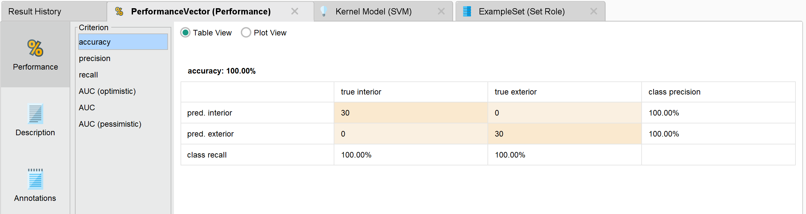
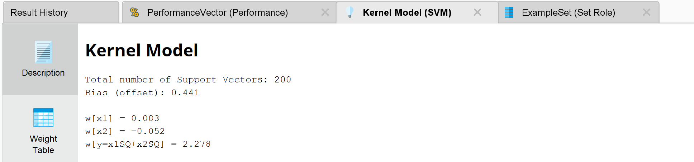
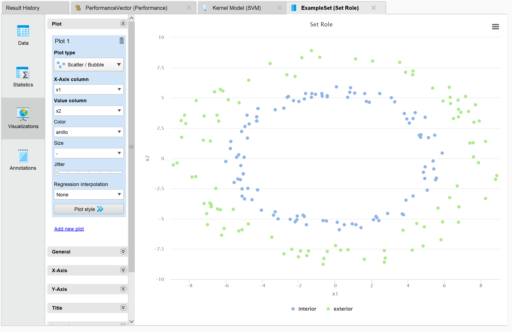

UT4_TA7
In this task, we explored the use of Support Vector Machines (SVM) for classification. Here's how we implemented the model in RapidMiner:Process Overview:
The process starts by retrieving the dataset using the Retrieve operator. We then defined the target variable for prediction using the Set Role operator. A validation subprocess was used to evaluate the SVM model, which splits the data into training and testing sets for cross-validation.
Results:
The SVM model was evaluated on the testing set, and the results included the following:
- Accuracy: The overall accuracy of the model was 100%.
- Confusion Matrix: The confusion matrix highlighted the classification results for each class.

- Kernel Model Details: The kernel weights and bias were obtained as follows:

- Plot view:

Conclusion:
The SVM model demonstrated exceptional performance on the dataset, achieving a perfect accuracy of 100% when evaluated on the testing set.
This indicates that the model was able to classify all test examples correctly, assigning them to their respective classes without any errors.